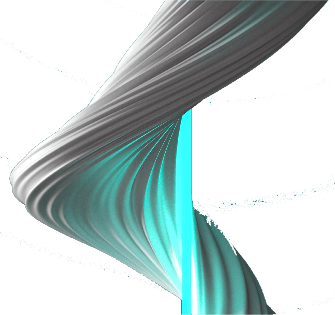

Medida é em pixeis.
width - largura
height - altura
Desta forma define a largura e a altura é ajustada automaticamente. Imagem mantém as proporções
Desta forma define a largura e a altura é ajustada. Imagem perde as proporções e pode ser destorcida
Link externo não temos controlo e a imagem pode desaparecer da sua origem.
Neste caso é mostrado que a imagem não pode ser carregada

Permite fazer uma descrição da imagem

Recurso de imagens sem direitos de autor pexels, pixabay freepik entre outros.

Usar imagens com dimensão adequada à utilização
Se vamos usar um width de 500 porque carregar uma imagem com 2160? Implicações no espaço e na performance
Compressão de imagens tinypng
Compressão de imagens compressjpg
Redimensionar imagens easy-resize
Criar imagens photopea

Usar icons flaticon

Mapear imagem para ter várias zonas com ações distintas image-map
imagens não podem ser redimensionadas
Basta incluir a imagem na tag a